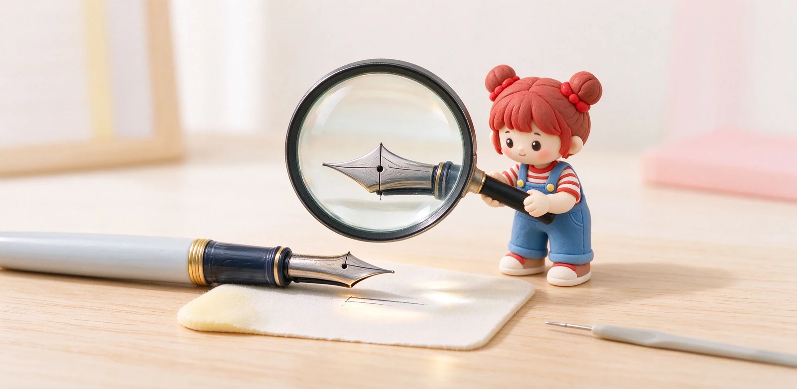

語意摘要：鋼筆刮紙、單向卡住、要用力才出水，最常見原因是筆尖兩根縫腳（tine）對齊不良，其次是筆尖磨得太圓（俗稱 baby's bottom）或筆舌卡塵。多數狀況可以先清洗、再用放大鏡確認對齊、輕壓高的那根縫腳來修正；真的磨損嚴重或摔歪，就送專人打磨，不要自己硬磨。
先判斷：你遇到的是哪一種不順
在動手之前，先弄清楚症狀，因為不同問題解法完全不同。拿你的筆在紙上慢慢畫八的字與直線，留意以下幾種：
- 某一個方向刮、另一個方向滑：通常是縫腳一高一低。
- 要用力壓才出水、輕描第一毫米乾乾的：可能是 baby's bottom（筆尖太圓）。
- 寫到一半忽然斷墨、甩一甩又好：多半是筆舌卡了紙塵或墨水結塊。
- 每個方向都粗粗澀澀：可能是新品筆尖表面還沒磨開，或整體出墨太乾。
先做最便宜的一步：換張不暈墨的紙、徹底洗一次筆。如果換紙換墨後變順，那根本不是筆尖問題，別急著拆筆。
最常見：兩根縫腳（tine）對齊不良
筆尖正面那條縫分成左右兩瓣，叫 tine。因為寫字用力、摔筆或溫差，其中一瓣可能被壓高一點，這時較低的那瓣就會在某個方向刮到紙。玩家估計，高達八成的『刮紙』其實只是對齊不良，不是筆尖形狀問題。
檢查方式：用 10 到 20 倍的放大鏡（或手機微距模式），把筆尖朝自己正面看，左右兩瓣前端應該在同一水平線；再從側面看高度是否一致。也可以用指甲背面橫跨兩瓣輕划，會明顯摸到哪一瓣凸。

自己怎麼修：只動『壓高的那一瓣』
確認哪一瓣偏高後，原則永遠是『把高的壓下去』，不要去把低的拉上來——因為筆尖要緊貼下方的筆舌才出墨，拉下瓣會讓筆尖與筆舌分離，反而更糟。
- 把筆尖段取下，墊穩在桌面，筆尖朝上。
- 用軟邊（信用卡、寶特瓶蓋邊）對準偏高的那瓣最前端。
- 輕輕往下壓個一秒就放，別一次壓到底。
- 裝回、畫幾個八的字測試，不對再來一次。
第二常見：baby's bottom 與乾澀出墨
如果筆尖兩瓣明明對齊，卻還是『輕描不出、用力才出』，放大看前端圓滾滾、中間那條縫碰不到紙，這就是玩家說的 baby's bottom（像嬰兒屁股一樣圓）。原因是最前端的接觸點被磨成弧面，輕壓時縫的開口碰不到紙。
自救方法是把筆拿比平常更直立（更陡的角度），在紙上畫密集的八的字與圓圈，讓前端的弧面自然磨出一個小接觸點。這個過程需要耐心，幾十圈下來輕描就能出水。千萬別用粗砂紙硬磨。
什麼狀況該送去修，不要自己來
常見問題 FAQ
新鋼筆輕微刮紙正常嗎？
我可以用砂紙把刮的地方磨順嗎？
筆尖摔歪了還能救嗎？
為什麼我輕描不出水、用力才出？
洗過、換紙還是斷墨怎麼辦？
資料來源與核實依據
- Fountain Pen Nib Tuning: How to Smooth, Adjust, and Fix Your Nib（baby's bottom 診斷）（The Pen Archive）
- Tine Alignment: Tips for Smooth Writing（10–20× loupe、壓高瓣、信用卡邊）（Fountain Pen Revolution）
- Fountain Pen Nib Repair: Troubleshooting & Restoring（刮紙多為 tine 錯位）（YSTUDIO）
- Common Nib Issues and Quick Fixes（baby's bottom 定義與判斷）（Fountain Pen Revolution）
相關文章推薦

EF／F／M／B 筆尖粗細怎麼選？鋼筆字幅與書寫習慣完整對照
筆尖粗細看的是最前端那顆小銥粒：日系 F 大約 0.4mm、歐系 F 約 0.6mm，寫中文抓日系 F，寫歐系筆想細字要往 EF 抓。
金尖跟鋼尖差在哪？鋼筆筆尖軟彈、回彈與預算解析
金尖貴不是因為黃金本身值多少，而是它比較軟、能隨按壓張開又回來；但不是每個金尖都軟，也不是每個鋼尖都硬，關鍵在厚薄與設計。

鋼筆摔了、漏墨、不出水怎麼辦？常見故障自救與送修判斷
鋼筆九成的『壞掉』其實是不出水、漏墨或刮紙這三類，先洗、再對齊筆尖、檢查卡水與氣密，多數能自救；真的摔歪結構或筆舌裂開，才需要送修。